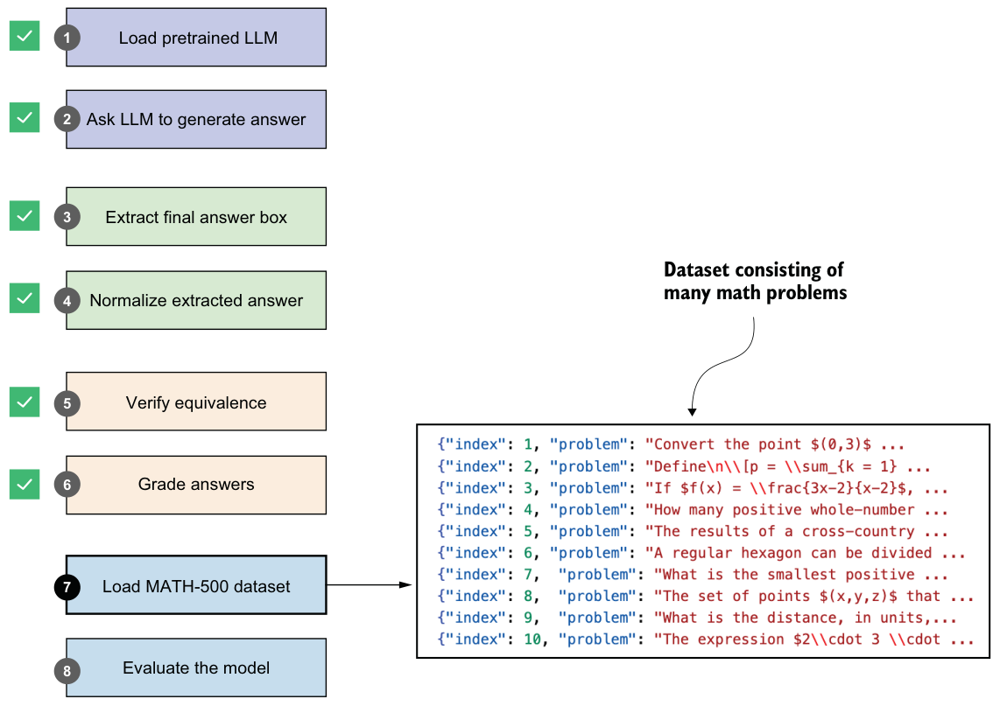
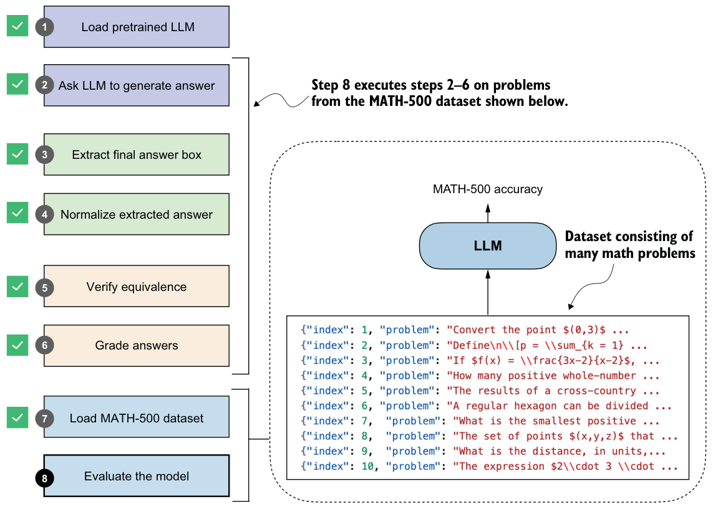

3.8Loading the evaluation dataset
As you have seen so far in this chapter, implementing a robust verification pipeline can be tedious. Fortunately, we now have all the pieces in place, from answer extraction to grading, and we’re ready to evaluate the LLM on a benchmark dataset. As shown in figure 3.9, we’ll use the MATH-500 dataset (https://huggingface.co/datasets/HuggingFaceH4/MATH-500), a widely used benchmark for reasoning models. It is a curated collection of 500 problems sampled from the original MATH dataset.

Using MATH-500 is a practical choice for three reasons. First, MATH-500 is large enough to be meaningful but still small enough to keep repeated evaluations throughout the book manageable, whereas running the full MATH dataset each time would be much slower. Second, in later chapters we’ll use a non-overlapping training subset derived from the original MATH dataset, so keeping MATH-500 as a held-out evaluation set gives us a clean reference point. Third, MATH-500 is a common benchmark dataset in the reasoning-model literature, which makes the results in this book easier to compare with prior work. I also prefer MATH-500 over simpler datasets such as GSM8K because it is more challenging for modern reasoning models and it better matches the kind of multistep symbolic verification pipeline we are building in this chapter.
We’ll load the MATH-500 dataset using the following code.
import json
import requests
def load_math500_test(local_path="math500_test.json", save_copy=True):
local_path = Path(local_path)
url = (
"https://raw.githubusercontent.com/rasbt/reasoning-from-scratch/"
"main/ch03/01_main-chapter-code/math500_test.json"
)
if local_path.exists():
with local_path.open("r", encoding="utf-8") as f:
data = json.load(f)
else:
r = requests.get(url, timeout=30)
r.raise_for_status()
data = r.json()
if save_copy: # Saves a local copy
with local_path.open("w", encoding="utf-8") as f:
json.dump(data, f, indent=2)
return data
math_data = load_math500_test()
print("Number of entries:", len(math_data))This prints the following result:
Number of entries: 500Loading the dataset from Hugging Face Model Hub
datasets library, which can be installed via pip install datasets or uv add datasets:
from datasets import load_dataset
dset = load_dataset("HuggingFaceH4/MATH-500", split="test")Before we implement the model evaluation pipeline in the next section, let’s take a closer look at the structure of the dataset by printing its first entry (we’ll use the built-in pprint library for nicer formatting):
from pprint import pprint
pprint(math_data[0])This produces the following output:
{'answer': '\\left( 3, \\frac{\\pi}{2} \\right)',
'level': 2,
'problem': 'Convert the point $(0,3)$ in rectangular coordinates to polar '
'coordinates. Enter your answer in the form $(r,\\theta),$ where '
'$r > 0$ and $0 \\le \\theta < 2 \\pi.$',
'solution': 'We have that $r = \\sqrt{0^2 + 3^2} = 3.$ Also, if we draw the '
'line connecting the origin and $(0,3),$ this line makes an
angle '
'of $\\frac{\\pi}{2}$ with the positive $x$-axis.\n'
'\n'
'[asy]\n'
'unitsize(0.8 cm);\n'
'\n'
'draw((-0.5,0)--(3.5,0));\n'
'draw((0,-0.5)--(0,3.5));\n'
'draw(arc((0,0),3,0,90),red,Arrow(6));\n'
'\n'
'dot((0,3), red);\n'
'label("$(0,3)$", (0,3), W);\n'
'dot((3,0), red);\n'
'[/asy]\n'
'\n'
'Therefore, the polar coordinates are $\\boxed{\\left( 3, '
'\\frac{\\pi}{2} \\right)}.$',
'subject': 'Precalculus',
'unique_id': 'test/precalculus/807.json'}As you can see, the dataset entry is formatted as a Python dictionary with keys and values, sorted in alphabetical order. These are the relevant keys:
problem: The math question or problem for the LLM to solve
answer: The correct (ground truth) answer we want to compare the LLM answer against
solution: A worked-out, step-by-step explanation of the problem (not used in this chapter, but useful for training or analysis)
Now that we have a pretrained LLM, evaluation functions, and a benchmark dataset to work with, we can evaluate the model.
3.9Evaluating the model
In this section, we’ll put the LLM text generation and evaluation tools from steps 2–6 in figure 3.10 into practice and apply them to the MATH-500 dataset (step 8), which we loaded in the previous section. This full pipeline will be important in future chapters because it will be the main way we’ll measure progress when we compare prompting methods and training-based improvements.

As you may recall from section 3.4, our answer-checking pipeline expects the model to return the answer in boxed form, which is a common convention when evaluating reasoning models on math problems. To increase the likelihood that the model adheres to this format, we can format the prompt as follows.
def render_prompt(prompt):
template = (
"You are a helpful math assistant.\n"
"Answer the question and write the final result on a new line as:\n"
"\\boxed{ANSWER}\n\n"
f"Question:\n{prompt}\n\nAnswer:"
)
return templateLet’s now apply this prompt template to the example prompt introduced in section 3.2 and shown again here:
prompt = (
r"If $a+b=3$ and $ab=\tfrac{13}{6}$, "
r"what is the value of $a^2+b^2$?"
)
prompt_fmt = render_prompt(prompt)
print(prompt_fmt)The formatted prompt is now as follows:
You are a helpful math assistant.
Answer the question and write the final result on a new line as:
\boxed{ANSWER}
Question:
If $a+b=3$ and $ab=\tfrac{13}{6}$, what is the value of $a^2+b^2$?
Answer:Next, we’ll pass the prompt to the text generation wrapper function we defined in listing 3.3 to recap the text generation process before we construct the model evaluation function:
generated_text = generate_text_stream_concat(
model, tokenizer, prompt_fmt, device,
max_new_tokens=2048,
verbose=True
)Using this prompt example, the model responds with a relatively brief answer:"\boxed{10}". (Note that the generated response may differ depending on whether you run the code on a CPU, CUDA, or MPS device.)
While brevity can speed up generation by reducing the number of tokens, the response is incorrect. In section 3.3, by contrast, without a prompt template, the model produced a longer response, which led to the correct answer, 14/3.
Whether the prompt template is well suited to a given model and task needs to be determined on a larger set of examples, such as the MATH-500 dataset, before we can draw any conclusions.